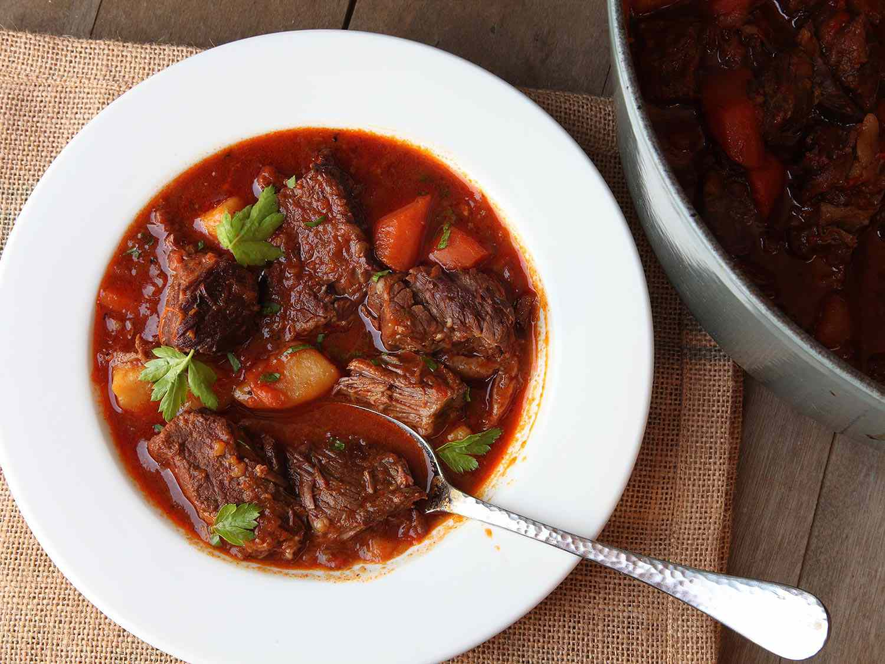

Aglio e Olio

Tasty, Delicious Beef Goulash
You should try this goulash if you haven't.
Have you tried this goulash yet?
Ingredients:
- Beef (the fattier, the better) - 450-700g
- Garlic cloves - 3-4
- Butter
- Potatoes - 3-4 large
- Carrots - 4-5
- Piquillo peppers - 2-3
- Onion
- Diced tomatoes (canned) - 100g
- Ground red pepper (whichever floats your boat)
- Ground coriander - 1tbs
- Bay leaf - 3-4
- Salt & pepper (to taste)
- Cut meat into chunks, season w/ salt, pepper & let rest
- Peel potatoes, carrots and prep rest of veggies
- Heat up butter, mix in red pepper, coat meat in the mixture and cover w/ hot water
- Whilst meat is cooking, chop up prepped vegetables
- Add everything to the pot, cover and simmer for 3-4 hours
- Enjoy.
Back